Introduction
Ce rapport accompagne le relevé d'audit effectué sur le site « Lux Airport ».
La méthodologie d'audit employée repose sur le référentiel RGAA 4.1, consultable à l'adresse suivante : https://accessibilite.public.lu/fr/rgaa4.1/criteres.html
L'audit a été réalisé au moyen de l'utilisation de navigateurs web et d'outils spécialisés. Des tests de restitution ont également été effectués conformément à la base de référence définie par le RGAA 4.1.
Échantillon
L'audit a porté sur un échantillon de 15 pages pour le niveau double A (AA) :
| Nº page | Titre de la page | URL |
|---|---|---|
| P01 | Accueil | https://www.lux-airport.lu/fr/ |
| P02 | Contact | https://www.lux-airport.lu/fr/contact-us/ |
| P03 | Mentions légales | https://www.lux-airport.lu/fr/legal/ |
| P04 | Résultats de recherche | https://www.lux-airport.lu/fr/?s=vol |
| P05 | Arrivées et départs | https://www.lux-airport.lu/fr/passengers-visitors/flights-information/arrivals-departures/ |
| P06 | Détails du vol | https://www.lux-airport.lu/fr/passengers-visitors/flights-information/flight-details/ |
| P07 | Enregistrement | https://www.lux-airport.lu/fr/check-in-luxembourg-airport-2/ |
| P08 | Parking | https://www.lux-airport.lu/fr/passengers-visitors/les-parkings-de-lux-laeroport/ |
| P09 | Découvrez l'aéroport | https://www.lux-airport.lu/fr/passengers-visitors/at-the-airport/explore-the-airport/ |
| P10 | Consignes relatives aux bagages | https://www.lux-airport.lu/fr/luggage-guidelines/ |
| P11 | Se rendre à l'aéroport | https://www.lux-airport.lu/fr/passengers-visitors/from-the-airport/getting-to-the-airport/ |
| P12 | Bus | https://www.lux-airport.lu/fr/passengers-visitors/from-the-airport/bus-schedule-luxembourg-airport/ |
| P13 | Images et vidéos | https://www.lux-airport.lu/fr/corporate/media-center/images-2/ |
| P14 | Redevances et frais aéroportuaires | https://www.lux-airport.lu/fr/corporate/services-and-facilities/airport-fees-charges/ |
| P15 | FAQ | https://www.lux-airport.lu/fr/frequently-asked-questions/ |
Environnement de test (base de référence)
Quelques critères RGAA, notamment ceux de la thématique JavaScript, incluent des tests de restitution à effectuer sur des technologies d'assistance associées à des navigateurs et des systèmes d'exploitation. Pour qu'un dispositif HTML / WAI-ARIA ou son alternative soit considéré comme compatible avec l'accessibilité, il faut qu'il soit pleinement fonctionnel, en termes de restitution et de fonctionnalités sur certaines combinaisons. Vous trouverez une explication détaillée de cet environnement de tests dans le document du RGAA 4.1.
Nous détaillons ci-dessous la base de référence utilisée pour réaliser les tests de restitution des composants du site.
Environnement de test – ordinateur
| Technologie d'assistance | Navigateur |
|---|---|
| NVDA 2022.1 | Firefox 101.0 |
| JAWS 2021 | Firefox 101.0 |
| VoiceOver 12.4 | Safari 15.5 |
Environnement de test — mobile
| Système d'exploitation | Technologie d'assistance | Navigateur |
|---|---|---|
| iOS 15 | Voice Over (dernière version) | Safari |
Accessibilité des pages auditées
Le site présente un niveau général d'accessibilité faible.
Le niveau moyen de conformité relevé atteint 34,38 % de conformité sur l'ensemble des pages auditées, avec 30,61 % de conformité au niveau simple A (A) et 46,67 % de conformité au niveau double A (AA).
Le site est non conforme.
Conformité RGAA 4.1 du site
| Conforme | Non conforme | |
|---|---|---|
| A | 30,61% | 69,39% |
| AA (légal) | 34,38% | 65,63% |
Note sur le calcul de conformité
La conformité globale (Tableau « Conformité RGAA 4.1 ») est calculée de la manière suivante : C / (C+NC). C est le nombre de critères conformes et NC le nombre de critères non conformes.
C'est ce nombre qui constitue la référence légale. Il représente le taux de conformité de l'échantillon.
Il est normal que le taux de conformité global diffère sensiblement du taux de conformité par page. En effet, un critère NC (non conforme) sur une page rend le critère non conforme sur l'ensemble de l'échantillon.
Pour qu'un site soit conforme (100 % des critères applicables sont conformes au niveau AA), il est nécessaire que le taux de conformité par page équivaille à 100 %.
Conformité pour chaque niveau
| Conforme | Non conforme | |
|---|---|---|
| A | 30,61% | 69,39% |
| AA | 46,67% | 53,33% |
Moyenne par pages
| Nº page | Titre de la page | %C |
|---|---|---|
| P01 | Accueil | 42,86% |
| P02 | Contact | 89,47% |
| P03 | Mentions légales | 83,33% |
| P04 | Résultats de recherche | 80,00% |
| P05 | Arrivées et départs | 68,42% |
| P06 | Détail du vol | 87,50% |
| P07 | Enregistrement | 96,67% |
| P08 | Parking | 71,88% |
| P09 | Découvrez l'aéroport | 86,21% |
| P10 | Consignes relatives aux bagages | 93,94% |
| P11 | Se rendre à l'aéroport | 90,91% |
| P12 | Bus | 77,78% |
| P13 | Images et vidéos | 66,67% |
| P14 | Redevances et frais aéroportuaires | 90,63% |
| P15 | FAQ | 87,88% |
Moyenne par thématiques
| Thématiques | C | NC |
|---|---|---|
| Images | 28,57% | 71,43% |
| Cadres | 100% | 0% |
| Couleurs | 33,33% | 66,67% |
| Multimédia | 50% | 50% |
| Tableaux | 0% | 100% |
| Liens | 0% | 100% |
| Script | 0% | 100% |
| Eléments obligatoires | 55,56% | 44,44% |
| Structuration | 0% | 100% |
| Présentation | 27,27% | 72,73% |
| Formulaires | 0% | 100% |
| Navigation | 57,14% | 42,86% |
| Consultation | 40% | 60% |
Impacts utilisateurs
Les principales personnes impactées sont les personnes aveugles et celles qui naviguent au clavier. Les problèmes liés aux scripts, à l'API ARIA et aux formulaires rendent parfois difficile l'utilisation du site par ces utilisateurs.
Note sur le relevé des non-conformités
Ne sont cités dans ce rapport que quelques exemples issus du relevé des non-conformités.
De plus, toutes les occurrences d'une non-conformité ne sont pas listées dans le relevé. Par exemple : pour les images sans attribut alt, le relevé mentionne quelques occurrences, mais ne les cite pas toutes.
Avis
Le site Lux-Airport est difficilement utilisable en l'état. En effet, de nombreux composants ne sont pas bien implémentés, ce qui empêche une bonne navigation avec les technologies d'assistance.
Les non-conformités les plus bloquantes pour les utilisateurs concernent :
- Les scripts, notamment les composants ARIA qui ne sont pas bien implémentés ;
- Les éléments non atteignables au clavier ;
- Les champs de formulaire qui n'ont pas d'étiquette reliée ;
- Les tableaux qui n'ont pas de cellules d'en-tête définies ;
- Des liens qui n'ont pas d'intitulé ou pas d'intitulé pertinent ;
- Les nombreuses images porteuses d'informations ou porteuses d'informations complexes qui n'ont pas de description détaillée.
Ce sont donc ces points qui devront nécessiter une attention toute particulière et qui demanderont le plus d'efforts.
Annexe technique
Images
Recommandation
Donner à chaque image porteuse d'information une alternative textuelle pertinente et une description détaillée si nécessaire. Lier les légendes à leurs images. Remplacer les images textes par du texte stylé lorsque c'est possible.
Images de décoration
Le site contient des images de décoration qui ne sont pas correctement identifiées, soit parce qu'elles ont une alternative renseignée, soit parce qu'il manque les attributs nécessaires pour qu'elles soient ignorées par les technologies d'assistance.
Ces images n'apportent aucune information et peuvent causer des problèmes de compréhension pour les aveugles et les grands malvoyants qui vont écouter les contenus avec un lecteur d'écran.
- Dans le cas d'une image insérée avec la balise
img, mettre unalt="". - Dans le cas d'une image insérée avec la balise
svg, mettre une propriété ARIAaria-hidden="true".
Constats sur le site
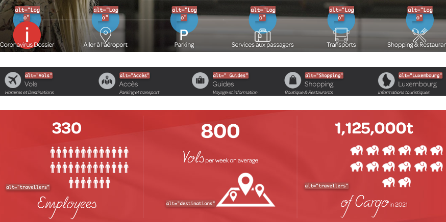De nombreuses images de décoration ne sont pas ignorées par les technologies d'assistance à cause d'une alternative renseignée. C'est le cas par exemple sur la page d'accueil pour les différents pictogrammes de décoration.
Images porteuses d'information
Il est nécessaire de donner une alternative pertinente dans le cas où la suppression de l'image entraînerait un problème de compréhension des contenus.
Constats sur le site
Dans la page Bus, on retrouve une image porteuse d'information "Mobilitéits zentral" qui n'a pas d'alternative renseignée.
Images porteuses d'information complexe
Certaines images porteuses d'informations sont complexes et nécessitent une description détaillée, pertinente, structurée et adjacente à l'image afin de permettre aux personnes ne percevant pas les images (comme les personnes aveugles), ou ayant des difficultés à les comprendre lorsqu'elles contiennent du texte (personnes ayant des difficultés de lecture, comme les dyslexiques par exemple) d'accéder à l'information.
Il sera possible de masquer cette description et de prévoir un bouton permettant à l'utilisateur de l'afficher si besoin (par exemple : « Afficher la description de l'image »). Voir un exemple de ce mécanisme. Il est également possible de proposer un lien adjacent à l'image vers la description détaillée.
Constats sur le site
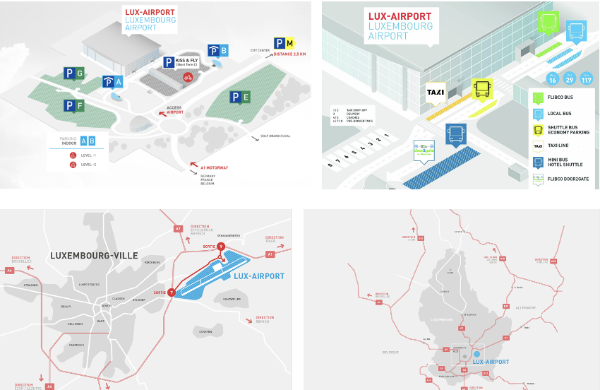On trouve dans la page Parking l'image du plan de l'aéroport qui est porteuse d'informations complexes. Même remarque pour la page Se rendre à l'aéroport pour les plans d'accès à l'aéroport, ainsi que dans la page Bus pour le plan d'accès aux bus.
Images textes
Lorsque des images textes peuvent être reproduites en HTML et CSS, vous ne devez pas utiliser d'images.
Les textes doivent être réalisés en HTML et CSS afin de permettre aux utilisateurs qui en ont besoin d'adapter leur lisibilité (agrandissement des caractères, modification des couleurs, des polices…).
Il est également possible de conserver les images textes et de fournir à l'utilisateur un mécanisme de remplacement qui lui permet, avec un bouton par exemple, de remplacer toutes les images textes en textes stylés.
Constats sur le site
Le bandeau "Lux Airport COVID 19 information", visible sur toutes les pages, est une image.
Cadres
L'absence d'identification des cadres peut poser un problème de repérage dans la structure de la page ou de compréhension des contenus pour les personnes aveugles.
Constats sur le site
Les cadres publicitaires n'ont pas d'attribut title présent sur la balise iframe
Couleurs
Recommandation
Ne pas donner l'information uniquement par la couleur et utiliser des contrastes de couleurs suffisamment élevés pour les textes et les composants d'interface.
Contrastes des textes
Plusieurs couleurs présentent un rapport de contraste insuffisant, ce qui peut poser problème aux personnes déficientes visuelles qui ont des difficultés à percevoir les couleurs ou les contrastes.
Rapports de contrastes définis par le RGAA
- Pour les textes qui ont une taille de police calculée inférieure à 24px sans effet de graisse ou une taille de police calculée inférieure à 18,5px avec effet de graisse, le rapport de contraste entre la couleur du texte (y compris le texte en image) et son arrière-plan doit être de 4.5:1, au moins.
- Pour les textes qui ont une taille de police calculée supérieure ou égale à 24px sans effet de graisse ou une taille de police calculée supérieure ou égale à 18,5px avec effet de graisse, le rapport de contraste entre la couleur du texte (y compris le texte en image) et son arrière-plan doit être de 3:1, au moins.
Vous pouvez foncer les couleurs pour obtenir le rapport de contraste exigé.
Si la charte graphique ne peut être modifiée, fournissez une méthode aux utilisateurs pour consulter le site avec des contrastes suffisants. Ceci peut être réalisé simplement avec une fonctionnalité JavaScript et une surcharge CSS des couleurs.
Vous pouvez voir un exemple de ce type de mécanisme sur le site sncf.com. Dans les réglages d'accessibilité, vous trouverez une option qui permet d'afficher le site avec des contrastes renforcés et inversés.
Constats sur le site
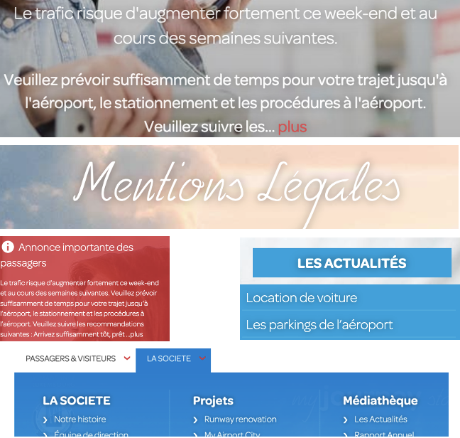De nombreux contrastes de texte sont insuffisants dans les pages. On peut citer par exemple les textes en blanc sur un fond rouge #D7464C (ratio de 4.31), les textes en blanc sur les images, les textes en blanc sur fond bleu #26AFE2 (ratio de 2.53) ou encore les liens des sous-menus (ratio de 2.8).
Contraste des composants d'interface
Les composants d'interface, les illustrations porteuses d'information ou encore les mises en couleurs porteuses d'information doivent être suffisamment contrastés pour être perçus par les utilisateurs ayant des troubles de perception des couleurs. Par exemple, une icône porteuse d'information devra avoir un rapport de contraste avec la couleur de fond de 3. De même, pour un champ de saisie de formulaire, dont la zone active est matérialisée par sa bordure, alors la couleur de cette bordure devra avoir un rapport de contraste de 3 avec la couleur de fond de la page.
Constats sur le site
On trouve également des composants d'interface qui ne sont pas suffisamment contrastés, comme les flèches du carrousel des actualités en blanc sur fond gris (ratio 1.1), les flèches du carrousel Instagram en gris sur un fond en image, ou encore la flèche suivante de la pagination en gris sur le fond gris clair (ratio de 2.2) dans la page Images et vidéos.
Multimédia
Recommandation
Donner si nécessaire à chaque média temporel une transcription textuelle, des sous-titres synchronisés et une audiodescription synchronisée pertinents. Donner à chaque média non temporel une alternative textuelle pertinente. Rendre possible le contrôle de la consultation de chaque média temporel et non temporel au clavier et s'assurer de leur compatibilité avec les technologies d'assistance.
Identifier les vidéos
Il est nécessaire d'identifier la vidéo et permettre ainsi aux utilisateurs de comprendre quelle est l'information présentée dans ce contenu.
Vous disposez de deux méthodes pour le faire :
- soit faire précéder la vidéo par un titre (solution recommandée) ;
- soit faire suivre la vidéo d'une phrase de légende (paragraphe).
Transcription textuelle
Les vidéos présentes sur le site ne disposent pas de transcription textuelle. Il s'agit d'un impact majeur d'accessibilité. En effet, la transcription textuelle est utile pour différents types d'utilisateurs (aveugles, malvoyants, sourds, malentendants, handicapés moteurs, handicapés cognitifs).
Cette transcription doit être un fichier structuré (docx, HTML) qui reprend toutes les informations présentes (visuelles et sonores) dans la vidéo.
Cette transcription peut être située :
- soit sur la même page que la vidéo ;
- soit ailleurs sur le site. Dans ce cas, ajouter alors un lien vers la transcription sous la vidéo par exemple.
Sous-titres
Chaque vidéo doit disposer de sous-titres synchronisés pertinents, pour permettre aux utilisateurs sourds ou malentendants d'accéder au contenu oralisé de la vidéo.
L'utilisateur doit pouvoir activer ou désactiver les sous-titres depuis le lecteur vidéo. Si ce n'est pas possible, une solution consiste à fournir deux versions de la même vidéo : une version sans sous-titres et une version sous-titrée (On fera ensuite un lien réciproque de l'une vers l'autre).
Audiodescription
Chaque vidéo doit disposer d'une version audiodécrite, si nécessaire. En effet, des textes incrustés ou des actions d'intérêt dans une vidéo ne seront pas perçus par un utilisateur aveugle.
De plus, l'utilisateur doit pouvoir activer ou désactiver l'audiodescription depuis le lecteur vidéo.
Constats sur le site

On trouve dans la page d'accueil ou encore dans la page Images et vidéos des vidéos qui ne sont pas identifiées, qui n'ont pas de sous-titres, transcription, ni audiodescription.
Tableaux
Recommandation :
Donner un résumé à chaque tableau de données complexe, s'assurer que pour chaque tableau de données ayant un titre, ce titre est pertinent, identifier clairement les cellules d'en-tête, utiliser un mécanisme pertinent pour lier les cellules de données aux cellules d'en-tête. Pour chaque tableau de mise en forme, veiller à sa bonne linéarisation.
Tableaux de données
Un tableau de données doit répondre à certains enjeux pour être exploité correctement par les lecteurs d'écran. Les enjeux sont les suivants :
- Le tableau doit posséder un titre permettant de l'identifier (
<caption>) ; - Les en-têtes doivent être identifiés (balises
<th>) et doivent pouvoir être restitués lorsque l'utilisateur parcourt chaque cellule à l'aide de son lecteur d'écran (attributsscopesi nécessaire).
Constats sur le site
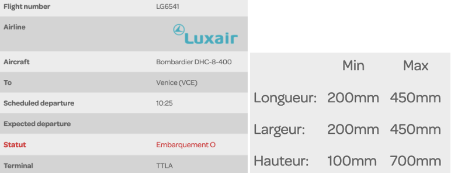Dans la page Détail du vol, les en-têtes de cellule ne sont pas définis. Même remarque pour la page Consignes relatives aux bagages pour le tableau des dimensions recommandées.
Liens
Recommandation :
Donner des intitulés de lien explicites, grâce à des informations de contexte notamment, utiliser le titre de lien le moins possible. S'assurer que le nom visible est contenu dans le nom accessible.
Liens-images
Un lien-image est un lien dont le contenu n'est composé que d'une ou plusieurs images (balises <img>). Généralement, ces liens ne posent aucun problème aux utilisateurs voyants qui parviennent à comprendre la destination du lien grâce à l'image et son contexte. En revanche, pour une personne aveugle, ces liens doivent obligatoirement posséder un intitulé.
L'intitulé d'un lien-image est généré grâce à l'alternative de l'image contenue dans ce lien.
Constats sur le site
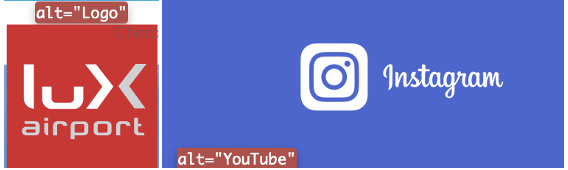On trouve par exemple le lien-image du logo de retour à l'accueil dont l'intitulé est "logo". Même remarque pour l'image-lien avec le logo d'Instagram qui a une alternative non pertinente : "Youtube".
Présence d'intitulés
Un lien doit toujours posséder un intitulé permettant à l'utilisateur de comprendre sa destination. Les liens contenant uniquement des objets graphiques (images, icônes, etc.) posent souvent problème pour les personnes aveugles.
Pour ces liens, la technique pour fournir un intitulé dépend des cas :
- Si ces liens-images sont construits avec des balises images (
<img />), renseignez l'alternative de l'image (par exemple :<a href="https://twitter.com/example"><img src="path/to/img/png"alt="Suivez-nous sur Twitter" /></a>) - Si ces liens-images sont construits avec des balises SVG (
<svg>), alors ajoutez sur cette balise unrole="img"pour indiquer aux lecteurs d'écran qu'il s'agit bien d'une image et un intitulé pararia-label="Suivez-nous sur Twitter".
Constats sur le site

On trouve des liens sans intitulé dans la page d'accueil pour le lien-image du bloc "J'aimerais en savoir plus sur", dans la page Arrivées et départ pour les liens des compagnies et du radar, ainsi que dans la page Images et vidéos où les images en téléchargement n'ont pas non plus d'intitulé.
Scripts
Recommandation :
Donner si nécessaire à chaque script une alternative pertinente. Rendre possible le contrôle de chaque code script au moins par le clavier et la souris et s'assurer de leur compatibilité avec les technologies d'assistance. Identifier les messages de statut lorsque c'est nécessaire.
Utilisation des boutons et des liens
Pour les aveugles et les grands malvoyants qui utilisent un lecteur d'écran, ce manque de distinction claire entre les liens et les boutons peut poser de graves problèmes.
Ainsi, un bouton implémenté sous la forme d'un lien qui déclenche une action de la page, risque de perturber l'utilisateur qui s'attendra au chargement d'une nouvelle page.
De manière générale, les liens devraient être réservés à l'affichage d'une nouvelle page ou la création de liens d'accès rapide dans le contenu. Dans tous les autres cas, l'emploi d'un bouton d'action est plus pertinent.
Enfin, chaque bouton doit avoir un nom accessible défini, soit par l'intermédiaire d'un texte (visible ou positionné hors écran) ou d'une propriété title, aria-label ou aria-labelledby.
Constats sur le site
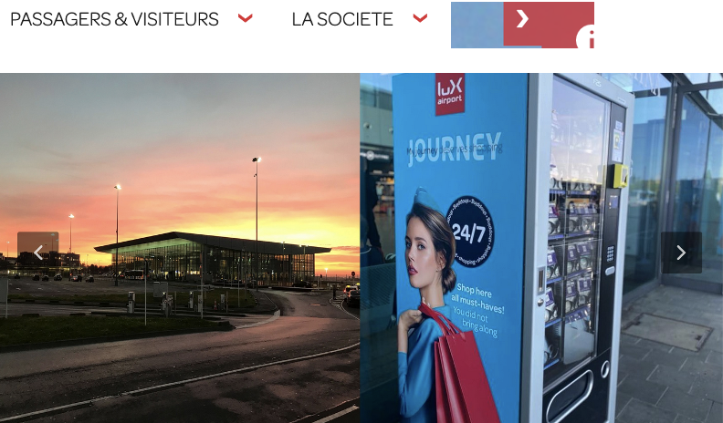Des éléments actuellement définis comme des liens doivent être des boutons. C'est le cas par exemple pour les liens du menu qui affichent les sous-onglets, le lien qui affiche et masque le bandeau "Annonce importante des passagers" ou encore les images-liens du bloc Instagram.
Utilisation inappropriée de propriétés ARIA
Les propriétés ARIA sont chargées de transmettre des informations indispensables à la restitution et l'utilisation des composants développés avec JavaScript aux technologies d'assistance. Une utilisation inappropriée peut poser des problèmes de restitution notamment.
Constats sur le site
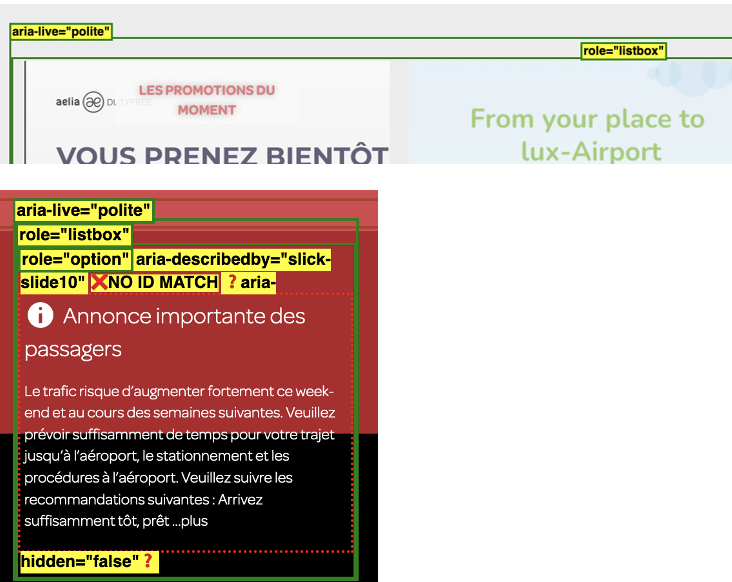On trouve dans les pages de nombreuses propriétés ARIA qui sont mal utilisées et qui devraient être supprimées, par exemple aria-live="polite" ou encore role="option".
Éléments interactifs inaccessibles au clavier
Si un élément ne peut pas recevoir le focus ou n'est pas totalement utilisable au clavier, les utilisateurs pour lesquels le clavier est le seul moyen de naviguer seront bloqués.
Constats sur le site
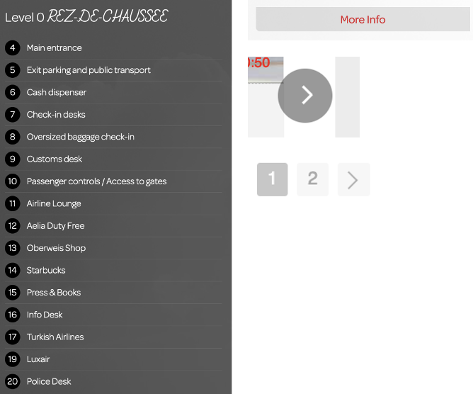Certains éléments ne sont pas atteignables au clavier, car ils ne sont pas bien implémentés dans le code. C'est le cas par exemple pour les éléments "more info" de la page Parking, le module de la pageDécouvrez l'aéroport ou encore les flèches du carrousel ainsi que la pagination dans la page Images et vidéos.
Fenêtres modales
Constats sur le site
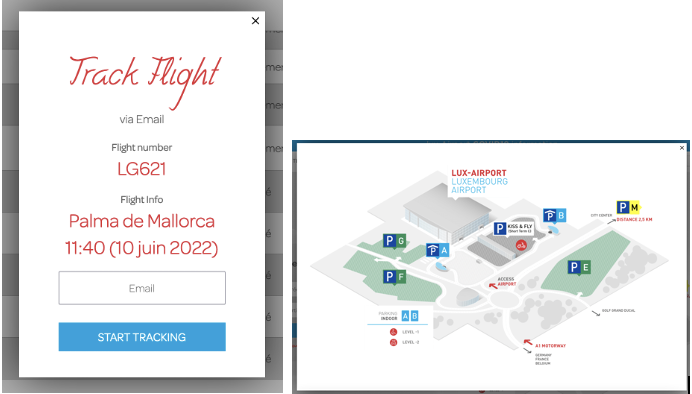On retrouve des fenêtres modales qui ne sont pas bien implémentées, comme la modale Flight Track de la page Arrivées et départs ou encore celle présente dans la page Parking.
Gestion de la visibilité de zones
Le site possède des fonctionnalités d'affichage ou de masquage des zones de contenus. L'état affiché/masqué du contenu additionnel doit pouvoir être disponible pour les technologies d'assistance afin que les utilisateurs aveugles accèdent à cet état.
Pour ce type d’élément, l’implémentation du motif ARIA Disclosure est recommandée.
Constats sur le site
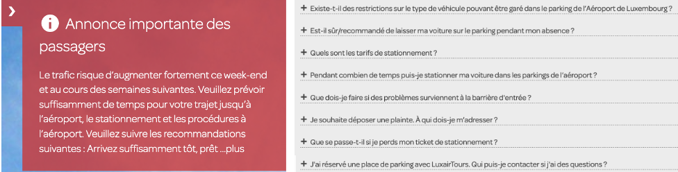Le bandeau "Annonce importante des passagers" ainsi que les zones qui s'affichent et se masquent dans la page FAQ devraient implémenter le motif ARIA Disclosure.
Éléments obligatoires
Recommandation
Vérifier que chaque page web a un code valide selon le type de document, un titre pertinent et une indication de langue par défaut. Vérifier que les balises ne sont pas utilisées uniquement à des fins de présentation, que les changements de langues et de direction de sens de lecture sont indiqués.
Titre de la page
Le titre de la page (visible dans l'onglet du navigateur) est un élément de repère dans le site web. Pour les utilisateurs de lecteurs d'écran (utilisateurs aveugles ou grands malvoyants), c'est le premier élément restitué par le lecteur d'écran au chargement de la page. Cela permet de donner du contexte aux utilisateurs qui n'ont pas une vision globale de la page. C'est l'information à laquelle les utilisateurs avec des troubles de la mémoire accèdent lorsqu'ils naviguent avec l'historique de navigation du navigateur. Il est donc essentiel d'avoir des titres de pages pertinents, concis et très souvent uniques dans le site, et qui reflètent de la position de l'utilisateur dans le site web.
Il est des cas particuliers, comme les pages dont le contenu est une liste de résultats paginés (ex. : les résultats de recherche), pour lesquels le titre doit refléter la nature de la recherche ainsi que le numéro de page en cours de consultation.
Constats sur le site
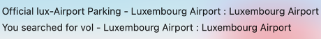Les titres des pages Résultats de recherche et Parking ne sont pas pertinents, car ils sont en anglais alors que l'utilisateur navigue sur la version française du site.
Indication de langue
Les lecteurs d'écran utilisent les indications de langue pour vocaliser le contenu dans la langue définie. La page doit contenir une définition de langue principale (généralement sur l'élément html).
Ensuite, les éléments de langue étrangère présents dans le contenu doivent être signalés. Si on trouve dans la page des termes absents du dictionnaire de la langue principale de la page, il faut les identifier afin que le lecteur d'écran les restitue dans la langue appropriée. En effet, une mauvaise prononciation pourrait mener à des incompréhensions pour les utilisateurs qui reposent uniquement sur des restitutions orales. Les noms propres sont exclus de cette obligation.
Constats sur le site
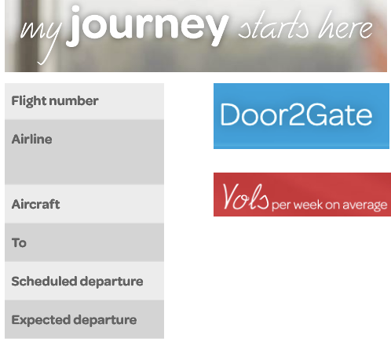On retrouve dans toutes les pages de nombreux mots en anglais, comme "My journey starts here", "vols per week on average", "Door2gate"…
Validité du code
Les technologies d'assistance, comme les lecteurs d'écran ou les systèmes de contrôle à la voix, s'appuient sur le code des pages pour générer les restitutions et les interactions avec l'utilisateur. Un lecteur d'écran va exploiter le code HTML fourni par le navigateur et les informations accessibles au moyen des API d'accessibilité du système.
Si le code comporte des erreurs (balises mal fermées par exemple), il y a un risque que les fonctionnalités du lecteur d'écran soient impactées, comme la navigation de lien en lien par exemple.
Pour vérifier la conformité d'une page, vous pouvez utiliser le validateur mis à disposition par le W3C.
Constats sur le site
On trouve de nombreuses erreurs de code dans toutes les pages.
Balises utilisées à des fins de présentation
Les éléments de structure HTML ont chacun une sémantique particulière (paragraphe, titre, image, lien, etc.). Si les éléments sont mal employés (détournés de leur utilité première), cela peut poser des problèmes aux utilisateurs qui naviguent à l'aide d'une technologie d'assistance (lecteur d'écran, plug-in…). En effet, les technologies d'assistance disposent de raccourcis permettant de naviguer rapidement entre certains types d'éléments (paragraphes, titres, listes, etc.). Si ces éléments sont mal employés, les utilisateurs ne peuvent pas utiliser ces fonctionnalités de repère et de navigation dans le contenu.
Constats sur le site
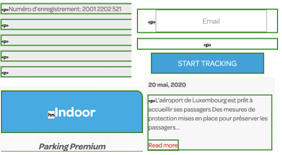On retrouve dans les pages de nombreux paragraphes vides, notamment dans les pages Mentions légales ou encore Départs et arrivées, ainsi que des textes qui ne sont pas structurés, comme la date des articles de la page Résultats de recherche ou le type de parking dans la page Parking.
Structuration de l'information
Recommandation
Utiliser des titres, des listes, des abréviations et des citations pour structurer l'information. S'assurer que la structure du document est cohérente.
Titres
Le titrage des contenus est une étape importante dans la structuration des contenus. Cela répond à deux besoins :
- identifier rapidement un contenu recherché ;
- naviguer rapidement dans le contenu en se déplaçant de titre en titre.
Un titrage correct fournit à l'utilisateur d'un lecteur d'écran un plan du document et lui permet de naviguer de titre en titre pour se déplacer plus rapidement dans le contenu de la page.
Pour valider la structure de votre page, vous pouvez utiliser l'extension Firefox HeadingsMap. Lorsque l'extension est active, sélectionnez l'onglet « Headings » et vérifiez la cohérence et l'imbrication des titres.
Constats sur le site
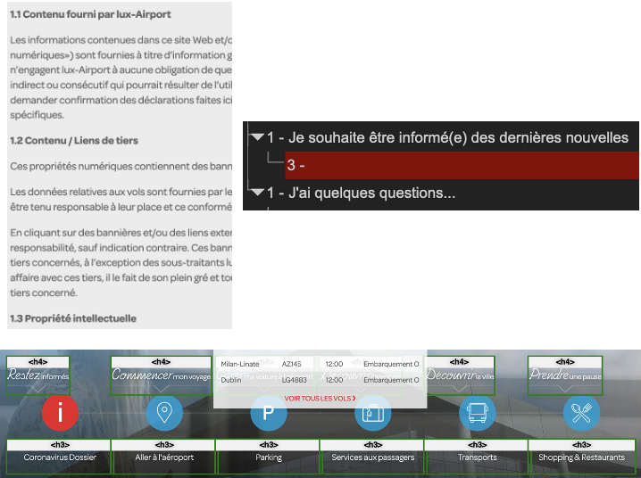Certaines pages ne possèdent pas une structure de titres cohérente. C'est le cas par exemple dans la page d'accueil où de nombreux titres ne sont pas nécessaires. Aussi, dans la page Mentions légales, les textes comme "1.1 Contenu fourni par lux-Airport", "1.2 Contenu / Liens de tiers" devraient être définis comme des titres. De plus, il y a un titre vide sous le titre présent en bas de toutes les pages.
Listes
La structuration en listes permet aux utilisateurs de lecteurs d'écran de consulter plus rapidement le contenu, grâce à des raccourcis spécifiques, et d'accéder directement à une liste ou de la passer sans avoir à en parcourir tous les items.
Constats sur le site
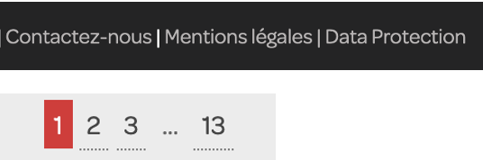La suite de liens en bas de page ainsi que la pagination dans la page Résultats de recherche devraient être implémentées comme des listes.
Présentation de l'information
Recommandation
Utiliser des feuilles de styles pour contrôler la présentation de l'information. Vérifier l'effet de l'agrandissement des tailles des caractères sur la lisibilité. S'assurer que les liens sont correctement identifiables, que la prise de focus est signalée, que l'interlignage est suffisant et donner la possibilité à l'utilisateur de contrôler la justification des textes. S'assurer que les textes cachés sont correctement restitués et que l'information n'est pas donnée uniquement par la forme ou la position d'un élément. S'assurer que les contenus sont lisibles et utilisables dans une fenêtre de largeur réduite. Veiller à ce que l'application de paramètres typographiques n'entraîne pas la perte de contenu ou de fonctionnalité. S'assurer que les contenus qui apparaissent au survol et à la prise de focus puissent être contrôlés par l'utilisateur.
Utilisation de CSS exclusivement
Certains utilisateurs qui présentent des troubles de la lecture (personnes dyslexiques par exemple), vont avoir besoin d'adapter la présentation des pages avec leurs propres mises en forme. Cela est possible sans difficulté si le site web utilise exclusivement les feuilles de styles CSS pour réaliser les mises en forme. Cependant, l'utilisation d'attributs et balises HTML de mise en forme rend ces adaptations plus compliquées, sinon impossibles.
Le RGAA donne la liste des attributs et balises qu'il est interdit d'utiliser.
Constats sur le site
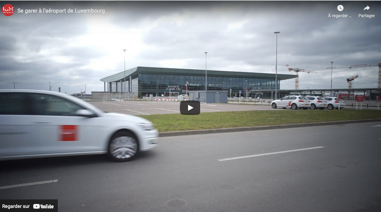Des attributs interdits (width, height et frameborder) sont utilisés par exemple dans les vidéos de la page Parking.
Contenu visible sans les feuilles de styles
Des contenus informatifs insérés avec CSS (avec des images de fond contenant du texte en image) peuvent ne pas être restitués par les lecteurs d'écran ou les systèmes de loupes vocalisés.
Constats sur le site
L'image des badges dans la page d'accueil est ajoutée en CSS et n'a pas d'alternative.
Couleur de police et couleur de fond des textes
De nombreux navigateurs permettent aux utilisateurs de choisir une couleur par défaut pour le texte et le fond, à utiliser sans avoir à modifier tous les styles spécifiés par l'auteur. Cela permet aux utilisateurs de visualiser des pages dont les couleurs n'ont pas été spécifiées par l'auteur dans leur combinaison de couleurs préférée.
Pour cette raison, si l'auteur du site a défini une couleur de police sans spécifier de couleur de fond associée, il est possible que le contraste résultant ne soit plus suffisant pour l'utilisateur.
Constats sur le site
De nombreuses pages n'ont pas de couleur de fond définie.
Contenu compréhensible sans les styles : ordre visible vs ordre réel
Un utilisateur aveugle n'a pas accès à la mise en forme qui parfois est porteuse d'informations importantes, notamment des relations entre les éléments.
Il est important de ne pas implémenter les textes dans l'ordre visuel, mais bien dans l'ordre logique de dépendance et hiérarchie des éléments.
Le contenu doit rester compréhensible sans les feuilles de styles (vous pouvez tester vos contenus en désactivant les feuilles de styles).
Constats sur le site
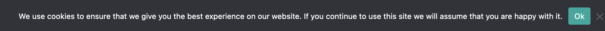Le bandeau des cookies doit être le premier élément présent dans le code source.
Visibilité de la prise de focus
Les personnes avec un handicap moteur qui naviguent au clavier peuvent rencontrer des difficultés considérables à utiliser du contenu si elles ne sont pas en mesure de repérer l'indication visuelle du focus et ses déplacements.
Constats sur le site
La prise de focus n'est pas visible sur la totalité des éléments interactifs du site.
Paramètres typographiques
Les utilisateurs malvoyants et/ou dyslexiques ont souvent recours à des adaptations de la présentation des textes. Pour cela, on doit s'assurer que de tels paramètres ne viennent pas perturber leur lecture sur le site.
Les présentations doivent supporter l'application de paramètres typographiques visant à augmenter les interlignages, interlettrages, les espaces entre les mots et entre les paragraphes. L'application de ces paramètres ne doit pas entraîner la perte de contenus ou de fonctionnalités :
- L'interlignage augmenté de 1,5 fois la taille de la police ;
- L'espacement entre les paragraphes augmenté de 2 fois la taille de la police ;
- L'espacement des lettres augmenté de 0,12 fois la taille de la police ;
- L'espacement des mots augmenté jusqu'à 0,16 fois la taille de la police.
Constats sur le site
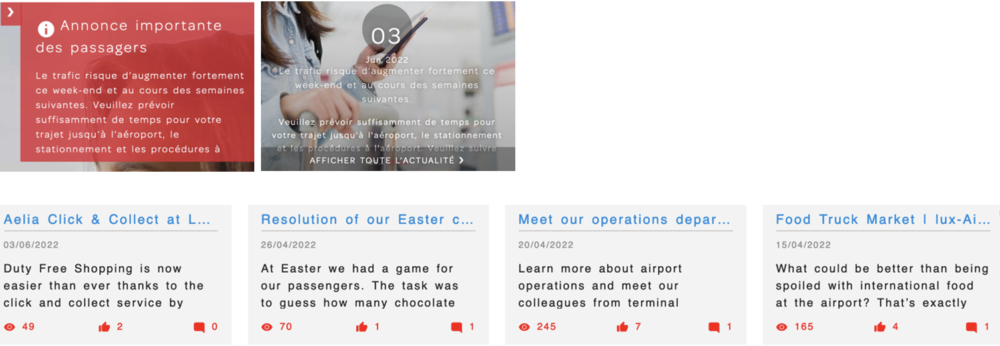Dans la page d'accueil, le texte du bloc "Annonce importante des passagers" n'est plus entièrement visible. Même remarque pour le texte du bloc "J'aimerais en savoir plus sur", ainsi que les différents paragraphes dans le bloc "Vidéo" de la page Images et vidéos.
Contenus additionnels au survol et au focus
Les contenus additionnels qui apparaissent au survol ou à la prise de focus (par exemple, un menu déroulant, une infobulle d'information), peuvent être contrôlés par l'utilisateur. Par exemple, les utilisateurs malvoyants utilisateurs de loupes d'écran peuvent déclencher l'affichage accidentel des contenus qui apparaissent au survol et ces affichages non désirés perturbent la consultation pour ces utilisateurs. L'utilisateur doit alors disposer d'un moyen simple pour les masquer et continuer sa consultation.
Également, en utilisant une loupe d'écran, il est probable que le contenu additionnel soit en fait apparu en dehors de la zone de zoom de la loupe, l'utilisateur doit pouvoir survoler le contenu additionnel à la souris.
Constats sur le site
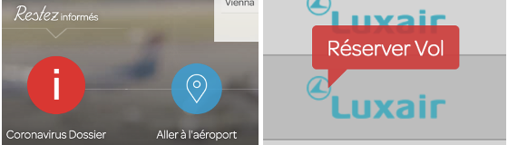Dans la page d'accueil, les éléments qui s'affichent au survol des liens de la bannière ne sont pas affichés au focus (à la navigation clavier). Même remarque pour les éléments qui s'affichent au survol de la compagnie dans la page Arrivées et départs. De plus, il n'est pas possible de les masquer avec échap par exemple.
Formulaires
Recommandation :
Associer pour chaque formulaire chacun de ses champs à son étiquette, grouper les champs dans des blocs d'informations de même nature, regrouper les items de même nature dans les listes de choix, donner à chaque bouton un intitulé explicite. Vérifier la présence d'aide à la saisie, s'assurer que le contrôle de saisie est accessible et que l'utilisateur peut contrôler les données à caractère financier, juridique ou personnel.
Étiquettes et champs
Les champs de formulaires doivent tous posséder des étiquettes correctement reliées.
Une étiquette de champ est un texte situé à proximité du champ de formulaire qui permet de connaître la nature, le type ou le format des informations attendues.
De cette manière, lorsqu'un utilisateur entre dans le champ de saisie avec un lecteur d'écran, le lecteur d'écran lit le contenu de l'étiquette. L'utilisateur comprend alors ce qu'il doit saisir.
Sans cela, même si une étiquette est présente visuellement, l'utilisateur entendra « champ de saisie vide » en entrant dans le champ et ne saura donc pas quoi saisir.
Constats sur le site
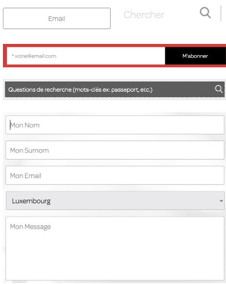Tous les champs de formulaires ne sont pas liés à une étiquette. C'est le cas par exemple pour le champ d'inscription à la newsletter, le formulaire de contact ou encore les différents champs de recherche.
Intitulés de bouton pertinents
Les boutons qui permettent d'interagir avec les formulaires doivent avoir des intitulés pertinents pour que l'utilisateur comprenne l'action du bouton.
Ces intitulés sont essentiels pour les personnes aveugles, afin qu'elles soient sûres de l'action qu'elles s'apprêtent à réaliser.
Constats sur le site
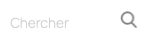Dans le moteur de recherche principal du site, le bouton qui permet de valider la recherche n'a pas d'intitulé.
Contrôle de saisie et aide à la saisie
Tous les champs obligatoires doivent être identifiés préalablement à toute validation de l’utilisateur.
Pour les champs qui attendent un format de saisie particulier pour être validés, ce format doit être spécifié à l’utilisateur par un passage de texte visible à proximité du champ. De plus, si l’utilisateur commet une erreur sur ce champ, alors le message d’erreur doit présenter un exemple réel de saisie.
Enfin, les messages d'erreur de saisie des champs de formulaire doivent être liés correctement aux champs en erreur.
Constats sur le site
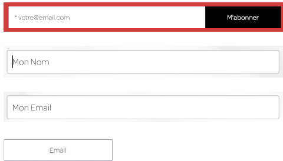Il manque une indication visuelle pour informer des champs obligatoires, un exemple de format attendu ou encore un exemple de saisie réelle dans le message d'erreur dans les différents formulaires, comme dans le formulaire d'inscription à la newsletter, le formulaire de contact ainsi que dans la modale "Track Fligh" de la page Arrivée et départs.
Identification des données attendues
Certains utilisateurs qui ont des troubles d'accès au langage verbal (paralysie cérébrale, aphasie par exemple) auront des difficultés à accéder au sens des termes écrits. Ainsi, pour leur permettre de remplacer les étiquettes présentes dans les formulaires par des étiquettes (verbales ou imagées) qu'ils connaissent, il est nécessaire d'identifier les champs avec un attribut particulier, de sorte qu'une technologie d'assistance pourra réaliser la personnalisation du formulaire nécessaire à l'utilisateur.
L'identification de ces champs permet également aux utilisateurs d'employer des outils pour remplir automatiquement les champs identifiés avec des valeurs de l'utilisateur.
On ne va rechercher que les champs qui attendent une donnée personnelle. Le RGAA demande d'utiliser l'attribut autocomplete et il fournit l'ensemble des valeurs possibles pour l'attribut.
Constats sur le site
Il manque des attributs autocomplete sur le champ de formulaire d'inscription à la newsletter, le champ nom et email du formulaire de contact ainsi que dans la modale "Track Fligh" de la page Arrivée et départs.
Navigation
Recommandation :
Faciliter la navigation dans un ensemble de pages par au moins deux systèmes de navigation différents (menu de navigation, plan du site ou moteur de recherche), un fil d'Ariane et l'indication de la page active dans le menu de navigation. Identifier les groupes de liens importants et la zone de contenu et donner la possibilité de les éviter par des liens de navigation interne. S'assurer que l'ordre de tabulation est cohérent et que la page ne comporte pas de piège au clavier. S'assurer que les raccourcis clavier qui utilisent une seule touche sont contrôlables par l'utilisateur.
Liens d'accès rapide
On note l'absence d'un lien d'accès rapide au contenu au moins. Les liens d'accès rapides sont utiles aux utilisateurs qui naviguent au clavier, mais aussi aux utilisateurs malvoyants qui utilisent une loupe d'écran afin de sauter rapidement les éléments redondants, comme la navigation.
Pour cela, il est préférable que ces liens soient toujours visibles à l'écran. Malgré cela, ces liens peuvent être positionnés hors écran, mais doivent au moins être rendus visibles à la prise de focus.
Il est donc nécessaire d'implémenter au moins un lien d'accès rapide au contenu, qui permet de sauter toute la navigation principale.
Constats sur le site
Il manque un lien d'accès rapide au contenu sur l'ensemble des pages du site.
Landmarks ARIA
Pour fournir des points de repère aux utilisateurs aveugles, il faudra également implémenter les landmarks ARIA sur les balises HTML 5 de la page.
Constats sur le site
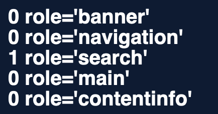On constate dans les différentes pages qu'il manque des landmarks ARIA, comme le role="banner", le role="nav", le role="main" ainsi que le role="contentinfo".
Ordre de tabulation
La navigation dans les contenus peut être considérablement compliquée pour les personnes aveugles ou les personnes handicapées motrices qui naviguent au clavier si l'ordre de tabulation n'est pas cohérent.
L'ordre de tabulation est déterminé par l'ordre des éléments dans le code HTML. Il ne suit pas forcément l'ordre de lecture de la page ou de l'écran, mais il doit être cohérent en fonction de la nature des contenus et des fonctionnalités.
Constats sur le site

Au clavier, on tabule parfois dans des éléments masqués, comme les liens "Annonce importante des passagers" et "plus" alors même que le bandeau "Annonce importante des passagers" est masqué. On tabule également dans certains liens du menu lorsque celui-ci est masqué avec échap.
Consultation
Recommandation
Vérifier que l'utilisateur a le contrôle des procédés de rafraîchissement, des changements brusques de luminosité, des ouvertures de nouvelles fenêtres et des contenus en mouvement ou clignotants. Ne pas faire dépendre l'accomplissement d'une tâche d'une limite de temps sauf si elle est essentielle et s'assurer que les données saisies sont récupérées après une interruption de session authentifiée. Proposer des versions accessibles ou rendre accessibles les documents en téléchargement. S'assurer que la consultation n'est pas dépendante de l'orientation de l'écran. Toujours proposer un geste simple en alternative d'un geste complexe permettant de réaliser une action.
Documents en téléchargement
Assurez-vous que chaque document soit accessible (cf. les Guides de créations de documents bureautiques accessibles), ou qu'il dispose d'une alternative accessible proposant le même contenu (par exemple, une version HTML correctement structurée).
Constats sur le site
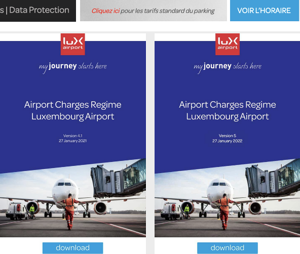On trouve des documents PDF en téléchargements qui ne sont pas accessibles, par exemple dans le bas de page avec le document "Data protection", les tarifs de la page Parking, les horaires de la page Bus ou bien les redevances aéroportuaires de la page Redevances et frais aéroportuaires.
Contenus en mouvement ou clignotants
Les contenus en mouvement peuvent être problématiques pour les utilisateurs avec des difficultés de lecture, en effet un contenu qui défile trop rapidement empêche d'accéder de fait à l'information. De plus, pour les personnes avec un déficit de l'attention, le mouvement les empêche de lire le reste de la page.
Il faut alors permettre aux utilisateurs d'arrêter et de redémarrer le contenu en mouvement , ou d'afficher tout le contenu sans le mouvement ou de masquer le contenu en mouvement et de le réafficher.
Constats sur le site
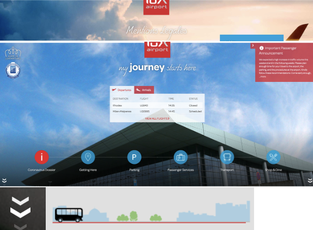On trouve des animations qui ne peuvent pas être stoppées, comme le carrousel de la page d'accueil, le clignotement des flèches qui indiquent qu'il y a du contenu en bas de page, les bannières animées visibles dans les différentes pages ou encore le défilement des bus dans la page Bus.
Gestes complexes
Certaines personnes handicapées motrices ne peuvent pas réaliser de gestes complexes, elles utilisent généralement des technologies d'assistance qui leur permettent d'interagir uniquement avec un geste simple comme cliquer sur un bouton par exemple.
Dans ces situations, il est indispensable que le site ou l'application propose pour chaque fonctionnalité basée sur un geste complexe une alternative au moyen d'un geste simple.
Le geste complexe nécessite l'utilisation d'un contact multipoint, comme par exemple, utiliser deux doigts pour zoomer ou dézoomer, ou tracer une trajectoire.
Le geste simple peut être un contact sur un seul point ou toute variation multiple de ce contact (double clic, etc.).
Constats sur le site
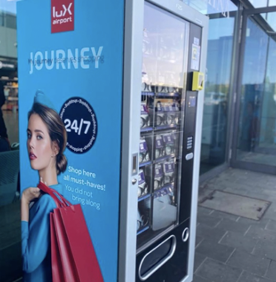En version mobile, il n'est pas possible de passer d'un écran à l'autre dans le carrousel Instagram sans faire de geste de swipe (glisser de droite à gauche ou de gauche à droite).